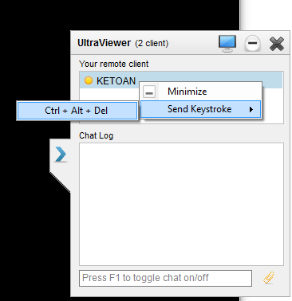
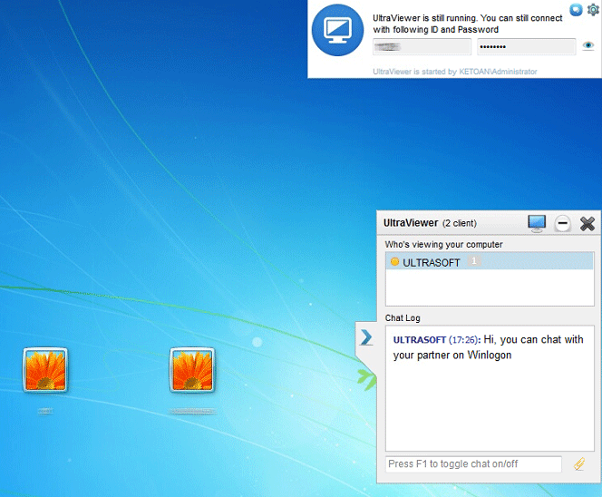
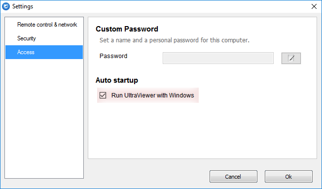
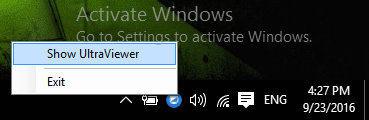
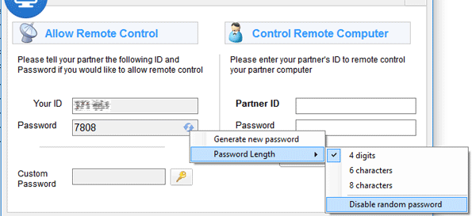
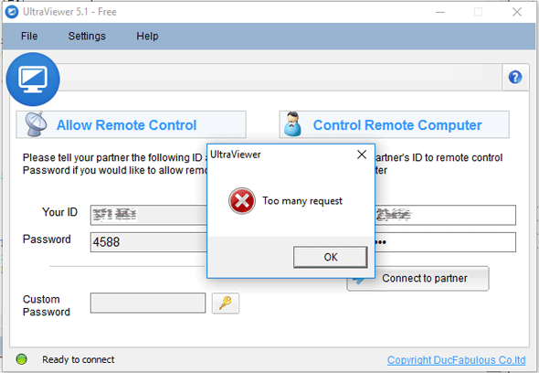

Notice : This version is stil in beta. We're temporarily not put it on the Download button at our homepage. You can download it at this link : http://ultraviewer.net/en/UltraViewer_setup_5.1_en.exe . After a few days testing later, if everything going well we will replace the version 5.0.28 of our homepage to this version.
This is what's new on the version 5.1 ( we've stopped calling this - version 6.0 because we want to do far more on version 6.0):
1. Send Keystroke : Ctrl + Alt + Del
We have successfully integrated the ability to send Ctrl + Alt + Del. You can do this by right click on the remote computer in the chat panel, and select Keystroke > Ctrl + Alt + Del. (This feature requires both computer using version 5.1 and the above)

Send Ctrl + Alt + Del Keystroke on UltraViewer
2. Log on, log off, switch user, And chat on Winlogon.
UltraViewer now can easily log on, log off, switch user. You can also chat on Winlogon.

Remote control and chat on Winlogon. You can easily Log on, log off, switch user.
You will see a small notice panel on the Winlogon screen indicate that UltraViewer is still running or not. This help you to easily logon to the Winlogon screen or protect you from mistakenly not closing UltraVIewer after your partner support you.
3. Start with Window
UltraViewer is now able to start with Window. And with the combine of ''Private custom password' feature, as many called this 'Unattended access' feature. You can go to Setting > Options > Access and tick on Run UltraViewer with Windows if you want to turn it on.

Auto-start UltraViewer with Windows
4. Fully SSL Encrypted
UltraViewer is now fully SSL encrypted. All datas sending to your partners are encrypted with 128 bit AES Encryption.
This will protect your privacy and and protect you from third parties sniffing/eavesdropping your signal.
5. Minimize to the System tray.
UltraViewer is now able to minimize to the System Tray, so you won't worry when mistakenly click on the (X) button, UltraViewer won't exit immediately and just minimize to the system tray.

UltraViewer on the System tray
You can re-show UltraViewer after minimize by double click on the UltraViewer icon or right click and select > Show UltraViewer.
You can change this setting by go to Settings > Security.
6. Change Password length, Reset, Disable Random Pasword
You can now change the password length ( from 4 random numeric for easy remote support , to 6 -> 8 digit and characters for securely anti brute-force)

Change password length, reset or disable random password
- You can also disable random password if you want to temporarilly disable UltraViewer or just want to connect using your Private Custom Password.
- You can generate a new password easily without restart UltraViewer.
8. Anti Brute-Force
You will receive this notify if you have an usual activity look like Brute force . This module will block you from 5->30 minutes if it see you're doing a suspect activity like input password wrong too many times continously.

"Someone" will receive this message when they try to brute-force your password
If you're using older version and try to brute force, you just receive an error: "Unknown error" .
9. Connection more stable
We've re-built our server to parallel model to make the connection more stable. If any server go down, UltraViewer will automatic connect to the another to keep the connection working. This will prevent down time for us and prevent down time for you to make your work stability.
10. Fix Disconnect while sending file issue
The disconnect issue while sending file is now gone.
11. Fixed some security issues
Special thanks to Zamis Clark - a security researcher from England and slipstream/RoL team for their kind support. They report some security issues to us so we have fixed them on this version.
12. And fixed many issues
Many other issues has been fixed on this version.
Because this version is a new release, if you receive any issues with it, please don't hesitate to email us - support@ultraviewer.net . Thank you very much for your support!
Share this post
About author
Tracy Tran
We specialize in providing the most up-to-date knowledge and information on computer tips and software to control remote computers. Connect for work 24/7
Hello,If the ID is generated every time the program starts then being able to start with Windows combined with ''Private custom password' feature is not full 'Unattended access' feature.In order to have full Unattended access the ID needs to be the same every time the UltraViewer starts.ThanksMicky
How does this work?I set it up on my laptop and my home PC (both Win 10), on the home PC I ticked the start with windows option. The idea is that I leave my home PC on and I can then log in from my laptop - wherever I am.I make a note of the ID and password on my PC and reboot.I can't log in from the laptop says it says:Cannot connect, your partner is not opening UltraViewer or do not connected to internet now.There is an UltraViewer service running on the PC, but each time I open the application I get a new password. So I set up a personal password on the PC. As soon as I manually opened the app I can now log in from my laptop using the new password (different at each app opening) or the “personal password”. I reboot again and try to log on with the personal password – same problem.It ONLY works if I manually open UltraViewer on my PC, so much for unattended operation?Do you have any instructions, help or just a comment?
I'm havng the same problem as other users here: Ultraviewer (version 6.1.6 on May 2018) does not start with windows, I have to manually start it. Will this be fixed soon? It would be really useful!
It won't let me enter a custompassword. It says: "Requires Administrator privilege". So I run as Administrator but it still refuses to let me enter a custom password :-(
I am trying to change the following items but I cannot change them:a. Custom Passwordb. Run UltraViewer with WindowsI am using an ADMIN userid but still cannot change these items. :-(
Is there a way to have a STATIC ID to be used with the Custom Password? We use UltraViewer v6.2.97 but in our case this unit is in a very remote location. The remote access computer is program to reboot every 12 hours to clear any corrupt issues at this remote site. During this FORCE reboot the Partner ID has changed - thus locking us out to connect for remote access. If we remove the force 12 hour reboot - the remote computer may hold the Partner ID for a couple of weeks or until a power loss occurs in this desolate area - Placing UPC power source that can run the remote pc for 48 hours did not resolve the Partner ID change. And putting a security camera on the login screen did not help because the login window with the ID viewable may not be visible or hidden behind a windows info window that a mouse click is needed to review the UltraViewer login screen. If the IS was static - then remote access flows thru seamlessly - as we would have to make the seven hour travel to the location of this site.
Every time I am finished using it still running in the background even I manually go to task manager then end it when I reopen my pc is still running and sometimes my screen dont go back to my background, it stays blue please fix that your software is very good lite and efficient but those things kinda annoying. What I do is uninstall it every time I'm not using it and install it when I need it.
The remote desktop control software UltraViewer has reached a new milestone in terms of global user base. We are constantly working to improve the product to meet users' needs. Please feel free to send us your feedback and suggestions.


Hello,If the ID is generated every time the program starts then being able to start with Windows combined with ''Private custom password' feature is not full 'Unattended access' feature.In order to have full Unattended access the ID needs to be the same every time the UltraViewer starts.ThanksMicky
Reply